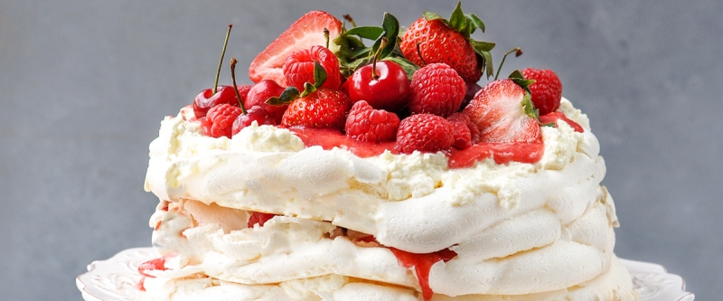

приготовление:
-
Поставить разогреваться духовку до 110 градусов. Смешать сухие ингредиенты в отдельной емкости: 180 гр. сахарной пудры, пакетик ванилина (если использовать стручок ванили - добавлять его семена на этапе вмешивания винного уксуса) и 3 ч.л. кукурузного крахмала. В более глубокой емкости взбить 4 яичных белка со щепоткой соли, когда масса станет пышной - добавлять частями сухую смесь и продолжать взбивать миксером до твердых пиков. На поверхность меренги вылить 1 ч.л. винного уксуса, вмешать лопаткой аккуратными движениями снизу-вверх.
-
На пергаменте нарисовать круг нужного диаметра, учитывая, что в итоге меренга слегка растечется и получится на 2 см. больше. Перевернуть лист, смазать сливочным маслом, положить на противень. Меренгу выложить на нарисованный круг, края делая немного выше, чем центр. Выпекать полтора часа. Вынуть и дать немного остыть, после перевернуть ее на блюдо и отделить бумагу. Меренгу можно делать заранее и держать в холодильнике до нужного времени подачи, когда останется только взбить сливки и порезать фрукты.
-
Для крема взбить 500 мл. 33% сливок с 2 ст.л. сахарной пудры. Крем выложить на меренгу. Сверху положить любые фрукты/ягоды. По желанию можно украсить шоколадной крошкой или карамельным соусом.